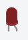
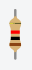

Bauteil-Liste
Nun werden die Bauteile vorgestellt, die du im Schaltkreis verwenden wirst.
Arduino
Der Arduino ist ein kleiner Computer, den du programmieren kannst. Er hat sogenannte Pins – das sind
Anschlüsse, an die du Kabel anschließen kannst.
GND steht für „Masse“ – hier fließt der Strom zurück. Pin 1 (oder
ein anderer Digitalpin) kann genutzt werden, um Strom zu einem Bauteil zu senden.
Steckbrett
Das Steckbrett hilft dir, Bauteile ohne Löten zu verbinden.
Die Löcher in einer senkrechten Reihe (in der Mitte) sind **nicht** verbunden, aber die
**horizontalen Reihen an den Seiten** schon – sie sind für Strom (+) und Masse (−) da.
Siehe Linien-Bild für die genaue Verbindung der Reihen.
LED
Eine LED ist eine kleine Lampe.
Wichtig: Eine LED darf nicht direkt an eine Stromquelle angeschlossen werden, sonst geht sie kaputt.
Sie braucht einen Widerstand, um den Strom zu begrenzen.

Widerstand
Ein Widerstand begrenzt den Strom, der durch ein Bauteil fließt.
Stell dir vor, er bremst den Strom ein bisschen. So schützt er empfindliche Bauteile – wie zum
Beispiel die LED – vor zu viel Strom.
